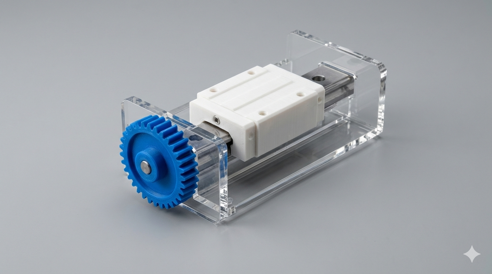
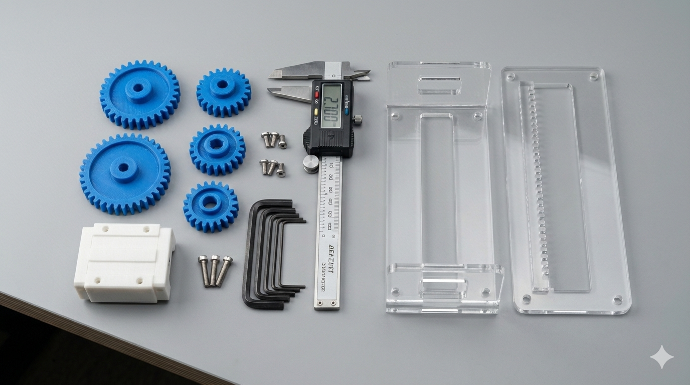
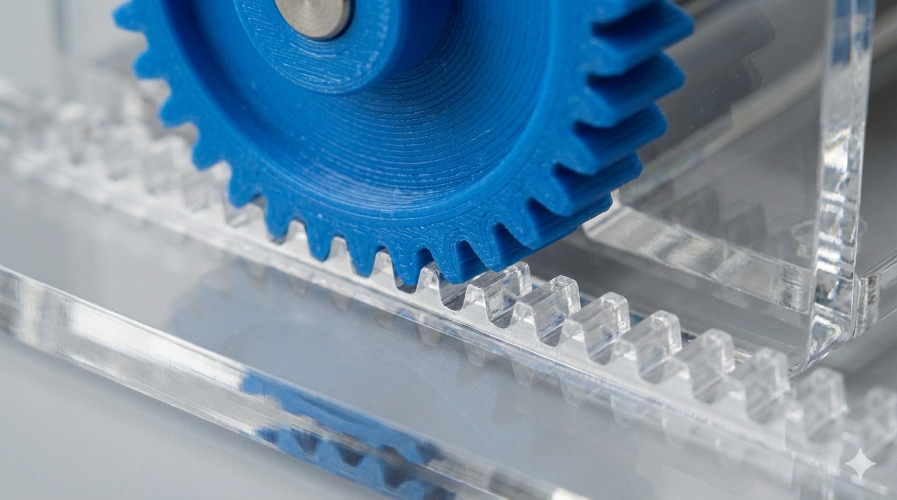

Motion Conversion Study
Translating Motion: A Study in Digital Fabrication and Mechanics
The core objective of this project was to master the transition from a digital 3D model to a high-functioning physical mechanism. The challenge centered on the classic mechanical problem of converting circular motion into linear motion, requiring strict adherence to tolerances and material properties. The assembly features a hybrid construction approach combining 3D-printed components with laser-cut framework. Complex geometries including a custom-pitched drive gear and guided slider block were printed in PLA for dimensional stability, while the chassis and support pillars were cut from 6mm acrylic to provide a rigid, transparent housing that allows the internal mechanics to be clearly observed. The entire mechanism was designed in Fusion 360, requiring careful calculation of gear ratios and interference fits to ensure smooth movement without excessive friction. Through several prototype iterations, I addressed common mechanical issues such as backlash and binding. The final result is a pedagogical tool that clearly demonstrates kinematic principles while showcasing a professional workflow from initial CAD sketching and stress simulation to final assembly and testing. This project highlights the ability to select appropriate fabrication methods and manage the interplay between different manufactured parts within a single functional system.


